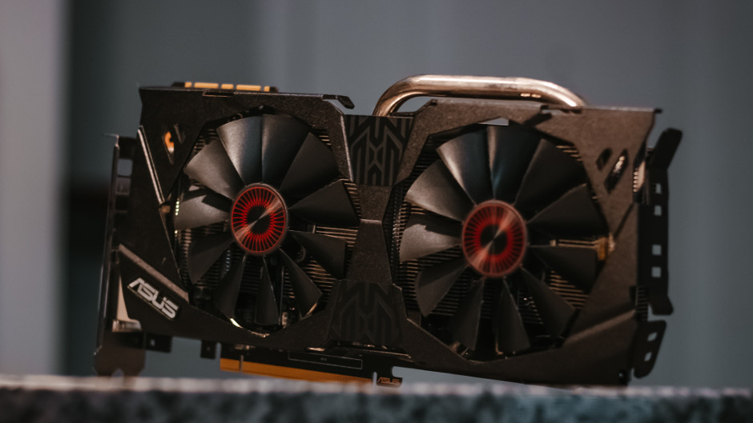
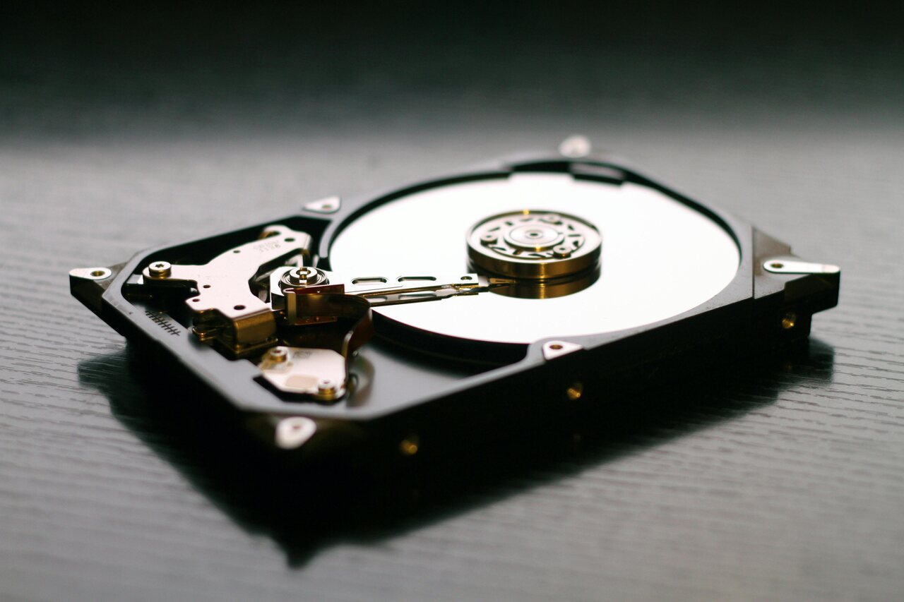
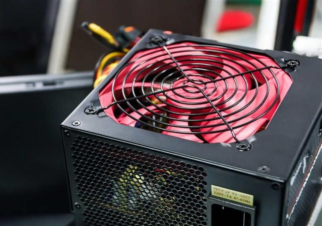
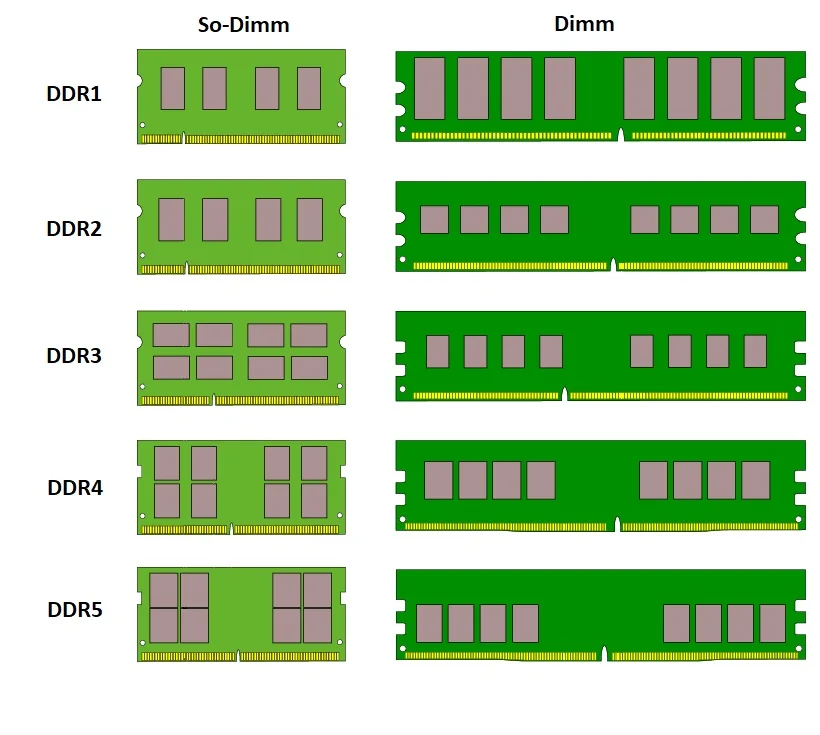
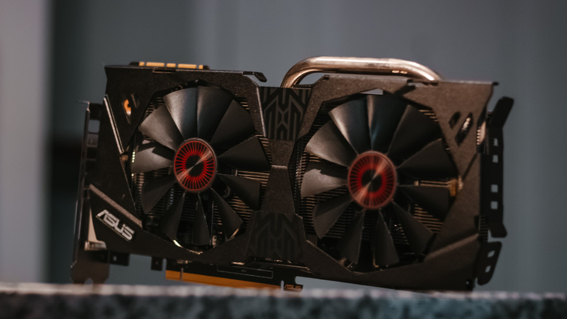
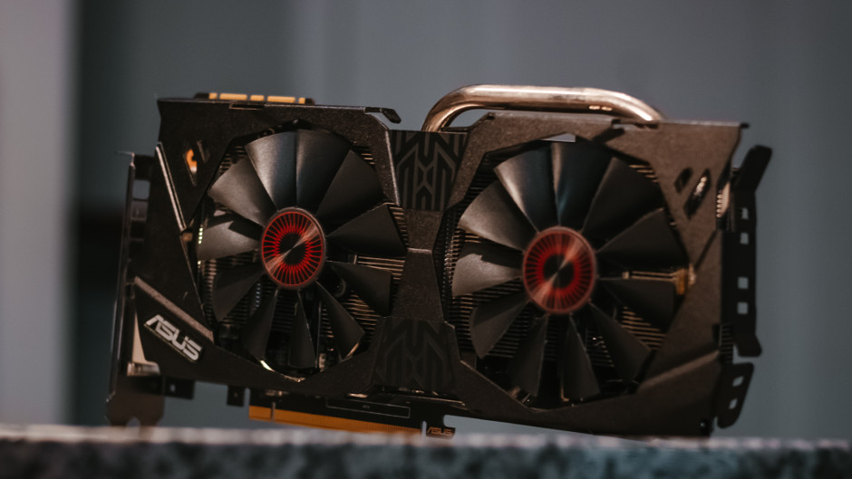
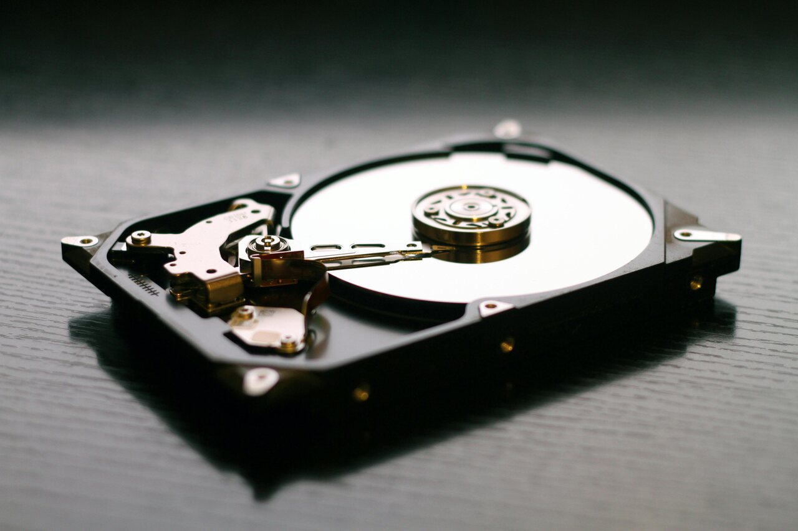
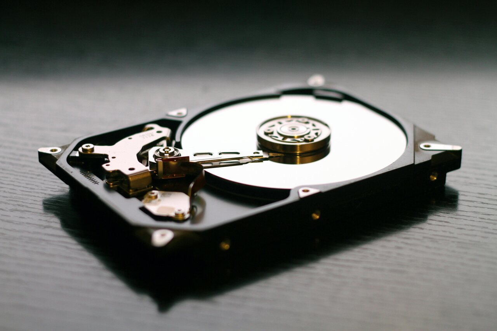
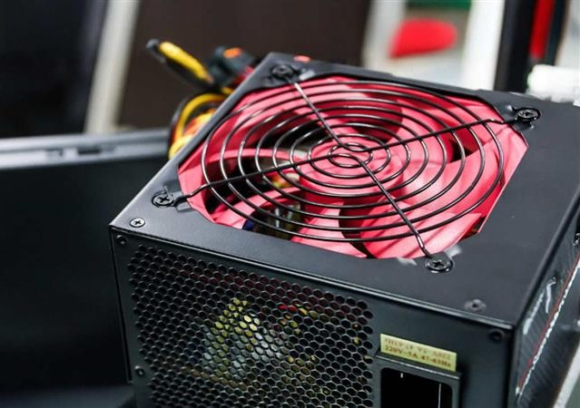
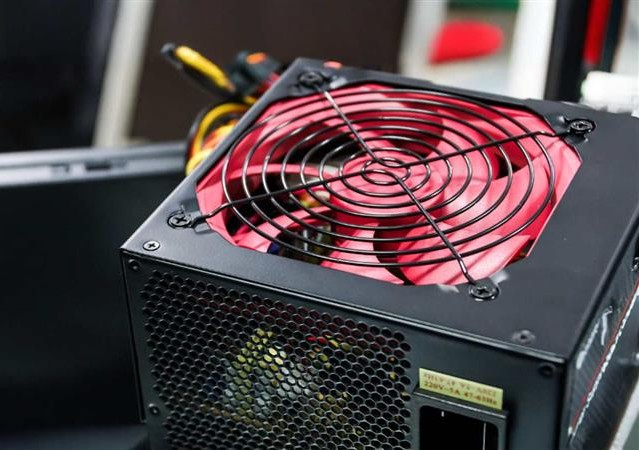

Przegląd najważniejszych komponentów: co robią, jak je dobierać i dlaczego są kluczowe.
Galeria podzespołów



Procesor (CPU)
Wykonuje instrukcje programów. Procesory dzielą sie na architekturę - ARM i x86. ARM jest wykorzystywana w urządzeniach mobilnych, NAS-ach oraz laptopach, gdyż są energooszczędne. x86 wykorzystywana jest w komputerach stacjonarnych oraz laptopach, gdzie liczy się wydajność. Głównie różnice między nimi są obsługiwane instrukcje - x86 często nie włączy programów napisanych dla ARM, ponieważ nie zrozumie ich. Drugim ważnym czynnikiem jest liczba rdzeni - im więcej tym w teorii lepiej, bo procesor wtedy może wykonywac kilka instrukcji naraz. Miarą bilionów operacji na sekunde jest Ghz - on determinuje szybkość wykonywania operacji przez rdzeń.
jest to pewnego rodzaju procesora, który używa szybkiej pamięci - szybszej od ramu do przechowywania poleceń i informacji. Karta graficzna posiada rdzenie - jak procesor, tylko zamiast kilku - kilkunastu posiada ich tysiące, są jednak one wolniejsze niż te w procesorze dlatego lepiej przydają sie do obliczeń równoległych np. duże modele językowe czy generowanie klatek w Blenderze
Ważne czynniki które decydują o wydajności układu
ilość rdzeni - CUDA lub strumieniowych
Wielkośc pamięci vram i jej przepustowość
Architektura
Pamięć operacyjna (RAM)
Superszybka pamięć w komputerze, która odpowiada za przechowywanie zadań oraz rzeczy niezbędnych dla systemu bądź programu. Najczęściej jest jej mniej niż pamięci masowej, a dodatkowo jest nietrwała - po odłączeniu zasilania jest czyszczona.
Głównne czynniki determinujące wydajność pamięci
Typ (DDR4/DDR5/DDR3)
Pojemność - dla zadań biurowych wystarczy 8GB, dziś lepiej inwestować w 32GB
Częstotliwość i opóźnienia - są one zalezne i ściśle związane z generacją - DDR5 ma większe opóźnienie, ale wyższe częstotliwości
Dodatkowo generacje ramu nie są ze sobą kompatybilne - mają wycięcie w innym miejscu co przedstawia grafika.

Dysk (SSD / HDD)
Dysk inaczej pamięć masowa ma za zadanie przechowywanie systemu oraz aplikacji, danych i innych plików. W przeciwieństwie do RAMu dane nie są tracone przy odłączeniu zasilania. Wyróżnia się 3 typy dysków: HDD, SSD i M2. HDD są najwolniejsze i są najmniej odporne na upadki, ale za to sa tanie i opłacalne przy przechowywaniu dużej ilości danych, których nie potrzebujemy na co dzień. SSD sa szybsze, ale są droższe i odzyskanie danych jest trudniejsze od HDD. M2 natomiast są najszybsze, oferują wydajność rzędów 14000MB/s - gen5, ale są najdroższe.
Co wpływa na wydajność
Prędkość - definiuje maksymalną prędkość przesyłu danych jednego pliku
Odczyt/zapis losowy - od niego zależy responsywnośc systemu oraz jak szybko może znaleść losowy plik
Typ - HDD najwolniejsze - M2 najszybsze
Płyta główna
Kilkuwarstwowa płyta, której zadaniem jest umożliwienie komunikacji z komponentami w komputerze. To do płyty właśnie podłącza się praktycznie wszystko - od procesora po kontrolery RGB.
Zasilacz (PSU)
Zasilacz przekształca prąd zmienny na stały, aby dostarczyć moc do podzespołów. Najważniejsze czynniki to certyfikat sprawności - jaką wydajność zasilacz ma pod różnym obciążeniem, moc - ile szczytowo generuje prądu oraz złącza.
Chłodzenie
Odpowiada za chłodzenie komponentów w komputerze. Spotyka się 3 rodzaje: pasywne - radiator, przydatny w podstawowych systemach gdzie chcemy ciszę podczas pracy, powietrzne - uzywa radiatora plus dodatkwo wentylatory w celu usprawnienia przepływu powietrza oraz wodne - używa ciekłej cieczy do chłodzenia, przez co z reguły najwydajniejsze jest.
 

 

 
